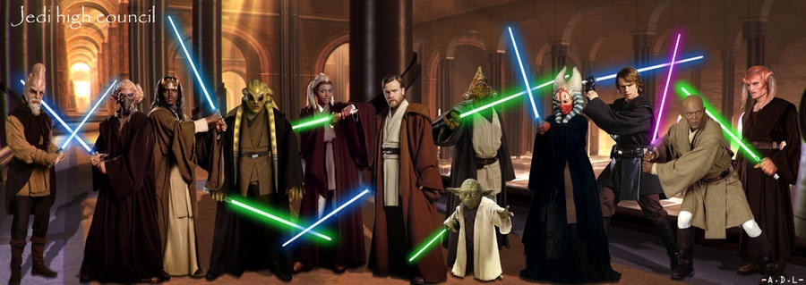

The Jedi
The Jedi are part an ancient order of protectors united by their ability to harness the power of the Force. They adhere to doctrine that favors to the light side of the Force through calmness and meditation while avoiding emotions afflicted with the dark side of the Force, such as anger and hatred. The Jedi Council consists of Younglings, Padawans, Jedi Knights, Jedi Masters, and the Grand Master.
The Jedi defended themselves by using lightsabers, the weapon of a Jedi, and a symbol of their role as guardians of peace and justice. Each of their lightsabers are different colors, depending on their connection to the Force. The blue lightsaber is for Jedi Guardians, who focus more no their lightsaber than the force. The green lightsaber is for Jedi Consulars, those who focus more on the force than the lightsaber. The yellow lightsaber is for Jedi Sentinels, those who focus more on other traits such as scholarly pursuits or practical skills. The Purple lightsaber is for those who use abilities from the dark side without being engulfed by its darkness. There are many other colors.
The Jedi use their abilities with your lightsaber and the Force to do good and keep the peace around the galaxy, even if it meant to becoming generals of war, or whatever it took.
The Jedi High Council
All the Jedi were under the control of the Jedi High Council, which consisted of 12 Jedi Members, the best, the strongest, and the wisest of the Jedi. It was composed of five permanent members (Yoda, Mace Windu, Ki-Adi Mundi, Plo Koon, and Saesse Tinn), four long-term members, and three limited-term members. If a Jedi is unable to be on the council, due to death, a new Jedi will take his/her place. They are the ones who decided if Jedi are ready to become the rank of Padawan, Knight, and Master.
